1. Introduction
Adding features to an existing agent — a new database-backed capability — typically means writing boilerplate, wiring up integrations, and keeping everything consistent with the patterns already in the codebase. Antigravity accelerates every stage of this process: it analyzes your codebase to build the context it needs, produces structured specifications and implementation plans for your review, and executes the code changes — all guided by domain knowledge it helps you capture as reusable skills and a project constitution that enforces non-negotiable principles. This codelab introduce a way to supercharge Antigravity Spec-driven Development paradigm by introducing a new cycle to boost specification documentation heavily referencing spec-kit
What you'll build
A locally running restaurant concierge application with reservation booking added through a complete SDD cycle:
- Reservation booking — guests book tables and check reservations, backed by new MCP Toolbox database tools and a Cloud SQL
reservationstable - (Challenge) – develop your own UI for the agent
- (Challenge) – deploy to Google Cloud with the help of the Antigravity agent
The starter code provides a working ADK agent with menu search (keyword + semantic via MCP Toolbox) and dietary preference tracking (via ToolContext). You extend it without writing application code by hand — Antigravity handles the implementation based on your specifications.
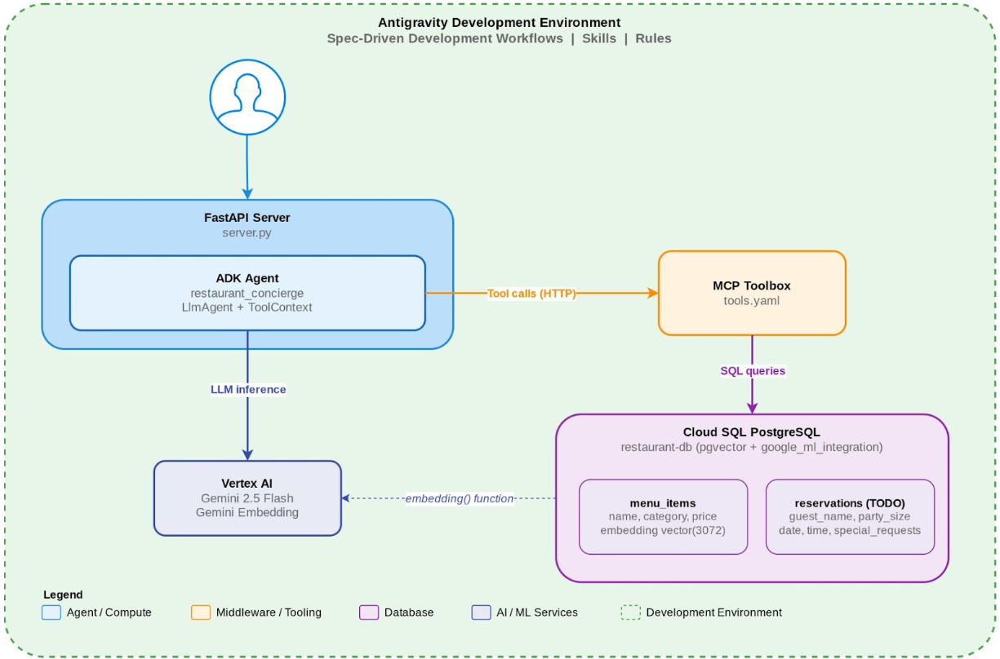
What you'll learn
- How to bootstrap project context so Antigravity understands an existing codebase
- How to create Antigravity skills and configure MCP that package domain knowledge (e.g., ADK docs, 3rd party skills) for reuse
- How to set a project constitution that the SDD workflows validate against during planning and analysis
- How to use Spec-Driven Development (SDD) workflows in Antigravity to systematically add features
- How to extend an ADK agent with new database-backed tools via MCP Toolbox
Prerequisites
- Google Antigravity and
gitinstalled on your local machine - A Google Cloud account with a active billing account enabled
- Previous completion of the four prerequisite ADK codelabs (or equivalent knowledge) will be helpful to understand use case context:
- Building AI Agents with ADK: The Foundation
- Building AI Agents with ADK: Empowering with Tools
- Building Persistent AI Agents with ADK and CloudSQL
- Deploy, Manage, and Observe ADK Agent on Cloud Run
- Database as a Tool: Agentic RAG with ADK, MCP Toolbox, and Cloud SQL
2. Set Up Your Environment
This step clones the starter repository, authenticates with Google Cloud, provisions a Cloud SQL database, and prepares your local Antigravity environment.
Install prerequisites
Ensure your system has the following CLI executable:
The installation instruction is different based on the Operating System of your machine.
Clone the starter repository
Open a terminal in Antigravity (or your system terminal). Clone the companion repo and enter the directory:
git clone https://github.com/alphinside/sdd-adk-antigravity-starter.git sdd-adk-agents-agy
cd sdd-adk-agents-agyOpen the cloned repository in Antigravity. File->Open Folder->select the cloned directory sdd-adk-agents-agy
Remove the upstream remote. The SDD workflows create git branches for feature specifications — removing the remote prevents accidentally pushing to the starter repository:
git remote remove originAuthenticate with Google Cloud
Run two authentication commands. Both open a browser for OAuth:
gcloud auth login
gcloud auth application-default loginSince you are working locally with Antigravity, you authenticate manually. auth login authenticates the gcloud CLI. application-default login authenticates Google Cloud SDKs that your application uses — ADK's Vertex AI calls and the Cloud SQL Python connector both rely on Application Default Credentials.
Set up your Google Cloud project
Write the location variables to .env before running the project setup script:
echo "GOOGLE_CLOUD_LOCATION=global" > .env
echo "REGION=us-central1" >> .envGOOGLE<em>CLOUD</em>LOCATION=globalis used for Vertex AI / Gemini API calls.REGION=us-central1is used for Cloud SQL and other GCP infrastructure
Download and run the project setup script. It creates or validates a Google Cloud project with trial billing and saves the project ID to .env then source it:
curl -sL https://raw.githubusercontent.com/alphinside/cloud-trial-project-setup/main/setup_verify_trial_project.sh -o setup_verify_trial_project.sh
bash setup_verify_trial_project.sh && source .envEnabling API
Enable the required APIs:
gcloud services enable \
aiplatform.googleapis.com \
sqladmin.googleapis.com \
compute.googleapis.com \
cloudresourcemanager.googleapis.comInstall dependencies
We will utilize uv as the Python project manager. uv is a fast Python package and project manager written in Rust ( docs ). This codelab uses it for speed and simplicity. Install the Python dependencies:
uv syncThen update the ADK agent's .env file with your project configuration:
cat > restaurant_concierge/.env <<EOF
GOOGLE_CLOUD_PROJECT=${GOOGLE_CLOUD_PROJECT}
GOOGLE_CLOUD_LOCATION=global
GOOGLE_GENAI_USE_VERTEXAI=True
EOFPrepare Database Infrastructure and Data
Set the database password and add it to .env:
export DB_PASSWORD=codelabpassword
echo "DB_PASSWORD=${DB_PASSWORD}" >> .envThen, run the scripts/setup_database.sh script to prepare all the infrastructure needed. It will do the following:
- Create Cloud SQL instance
- Check whether the instance is ready
- Grant Vertex AI permissions
- Create database
- Seed database
- Run the MCP Toolbox service in background
chmod +x scripts/setup_database.sh
./scripts/setup_database.sh > database_setup.log 2>&1 &This command will run the setup in background, you can periodically check the output at database_setup.log file
Now, we should have all of our required starter ADK agent repo to work on. Now let's talk more about Antigravity and Spec-driven development in the next section while waiting for everything ready
3. Explore the Starter Code and Understand Spec-Driven Development
This step walks through the starter code structure, introduces the Spec-Driven Development methodology, seeds the database, and verifies the base agent works before you start extending it.
Project structure
Open the cloned repo project in the Antigravity editor and review the directory layout:
sdd-adk-agents-agy/
├── .agents/
│ ├── workflows/ # SDD slash commands (/speckit.*) – manual trigger
│ │ ├── speckit.specify.md
│ │ ├── speckit.clarify.md
│ │ ├── speckit.plan.md
│ │ ├── speckit.tasks.md
│ │ ├── speckit.analyze.md
│ │ ├── speckit.implement.md
│ │ ├── speckit.checklist.md
│ │ └── speckit.constitution.md
│ ├── skills/ # Antigravity skills (loaded on demand, agent determined)
│ │ ├── mcp-toolbox-postgres/
│ │ │ └── SKILL.md # MCP Toolbox config skill
│ │ └── repo-research/
│ │ └── SKILL.md # Repo analysis skill
│ └── rules/ # Always-active context
├── .specify/ # spec-kit SDD templates and memory
│ ├── memory/constitution.md
│ ├── templates/
│ └── scripts/
├── restaurant_concierge/ # ADK agent package
│ ├── __init__.py
│ ├── agent.py # LlmAgent + ToolContext tools + Toolbox integration
│ └── .env # Vertex AI configuration
├── server.py # FastAPI server wrapping the agent
├── tools.yaml # MCP Toolbox tool definitions
├── scripts/ # Setup scripts
└── pyproject.tomlKey files
Agent Application Files
restaurant<em>concierge/agent.py— The core agent. AnLlmAgentthat combines MCP Toolbox database tools withToolContext-based dietary preference tracking. The agent loads all tools from the Toolbox server and adds two Python functions (save</em>dietary<em>preference,get</em>dietary_preferences) that useToolContextto manage state.tools.yaml— MCP Toolbox tool definitions. Three menu search tools are defined: keyword search (search<em>menu), semantic search viapgvector(semantic</em>search<em>menu), and category filter (get</em>menu<em>by</em>category). No reservation tools exist yet — you add those later onserver.py— A minimal FastAPI server, showcasing how you can access ADK as FastAPI object.get<em>fast</em>api<em>app()from ADK provides built-in endpoints including/run</em>ssefor SSE streaming and session management APIs.
Antigravity Files
.agents/skills/mcp-toolbox-postgres/SKILL.md— A skill that guide Antigravity on how to create proper tools.yaml configuration for MCP toolbox. This skill will teach configuration related tosources,tools, andembeddingModelsconfig required to build proper RAG pipeline. This skill won't be activated until you add proper YAML frontmatter to be recognized by Antigravity.agents/skills/repo-research/SKILL.md— A skill that teaches Antigravity how to analyze a repository incrementally and produce a structured project context document. It uses a 4-phase approach: surface scan (directory tree only), config and metadata files, entry points and data models, then targeted deep dives — each phase stops and writes findings before proceeding to the next. It is also inactive until you add YAML frontmatter later. Once activated, invoke it to generate.agents/rules/project-context.md— a comprehensive onboarding document covering architecture, runtime dependencies, API surface, and domain glossary.
Spec-Driven Development: from Antigravity's built-in planning to structured SDD
AI coding assistants make it easy to generate code from a prompt. The risk: you describe a feature in a sentence, the assistant writes hundreds of lines, and you accept it because it looks right. This is sometimes called "vibe coding" — you steer by feel, accepting or rejecting output based on whether it seems to work. It is fast for prototypes and throwaway scripts. It breaks down when the codebase grows, when features interact, or when you revisit code weeks later and cannot reconstruct why a decision was made.
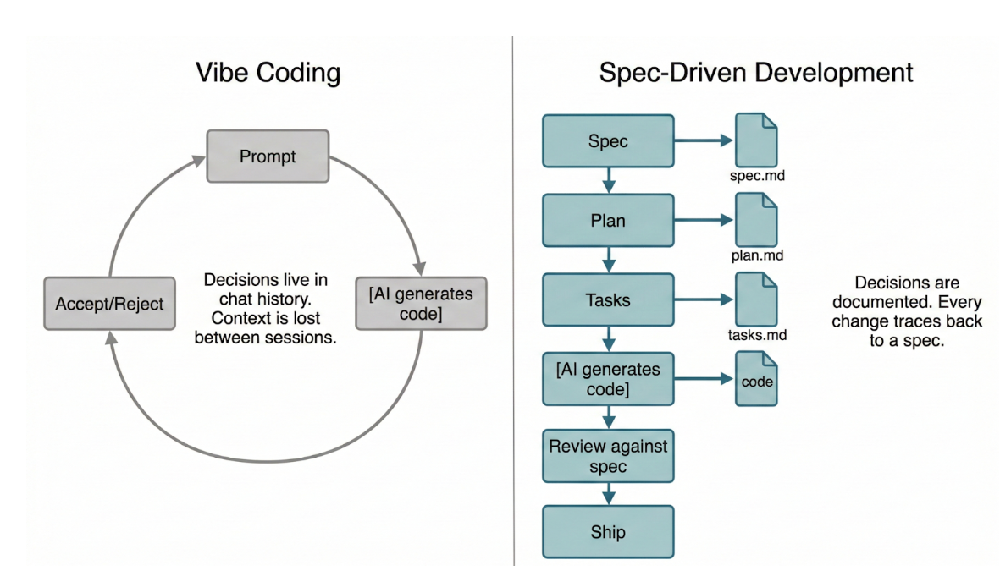
Spec-Driven Development (SDD) adds structure to this loop. Before any code is generated, you write a specification: what the feature does, who it serves, what the success criteria are. The AI assistant works from that spec — and so do you when reviewing its output. The spec becomes the single source of truth for intent. If the code diverges from the spec, you catch it in review. If requirements change, you update the spec first, then regenerate. Decisions are documented, not improvised.
The tradeoff is real: SDD is slower per feature than vibe coding. You write documents before writing code. But the payoff compounds — every future change to the codebase has context, every AI-generated implementation has a reviewable contract, and you can onboard collaborators (human or AI) by pointing them at specs instead of explaining decisions from memory.
Antigravity already follows spec-driven development principles. When you set the agent to Planning mode, it produces two artifacts before writing any code:
- Implementation Plan — an overview of the proposed technical approach, file changes, and architecture decisions
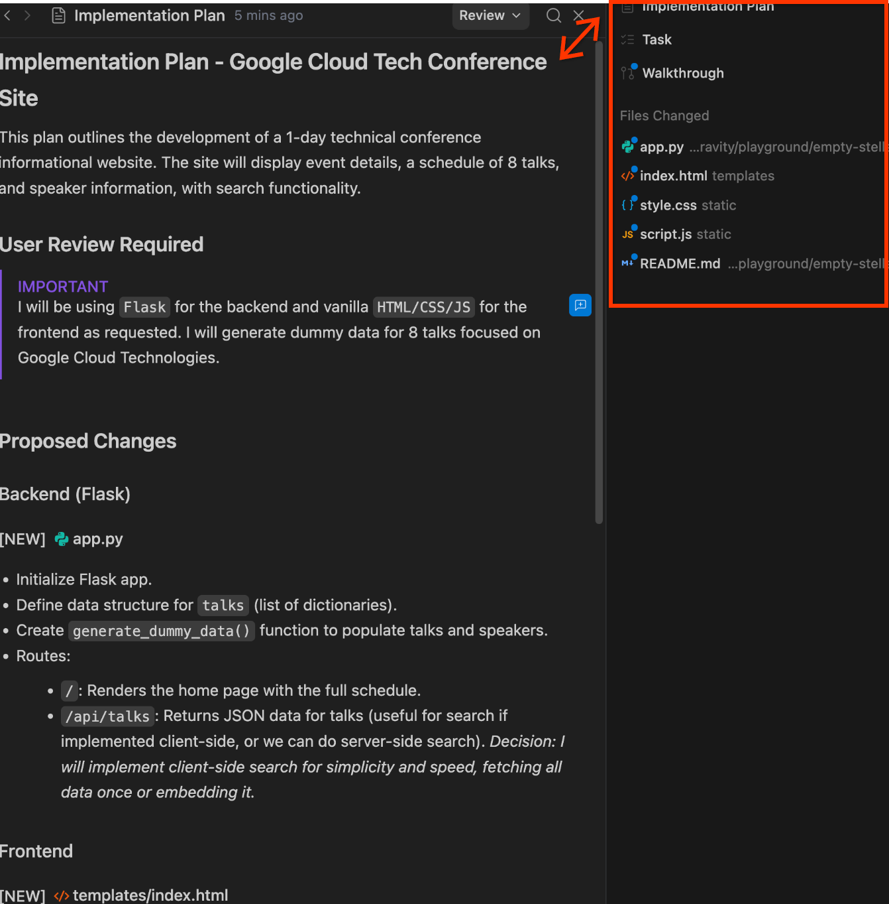
- Task List — a structured breakdown of work items
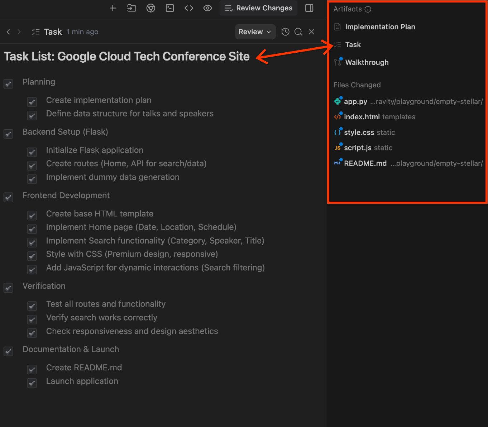
Antigravity asks you to review and approve these artifacts before execution. This plan-then-implement loop is the core of spec-driven development: specifications guide the code, not the other way around.
This codelab takes that foundation further with an opinionated, version-controlled workflow based on spec-kit — a specification-driven development framework from GitHub. Every feature goes through a deliberate pipeline where each artifact is a standalone document you can review, edit, and track in git. The pipeline includes two optional quality-gate phases (clarify and analyze) that catch issues before they become implementation problems:
| Phase | Artifact | Purpose |
|---|---|---|
| /speckit.specify |
spec.md | Define WHAT to build (user-facing, technology-agnostic) | | /speckit.clarify (optional) | Updated spec.md | Identify underspecified areas, ask targeted clarification questions, encode answers back into the spec | | /speckit.plan | plan.md, data-model.md, research.md | Design HOW to build it (technical approach, data models, research) | | /speckit.tasks | tasks.md | Break the plan into ordered, actionable steps | | /speckit.analyze (optional) | Analysis report | Review tasks for risks, gaps, or missing edge cases before implementation | | /speckit.implement | Code changes | Execute the tasks, checking off each one |
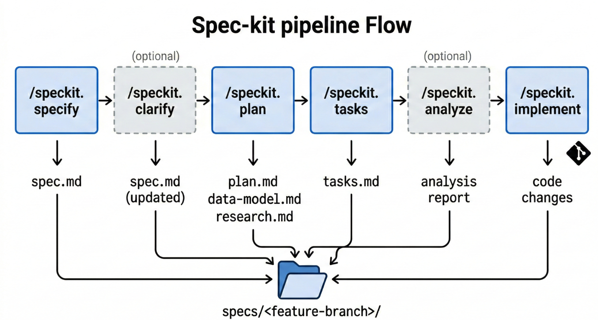
Every artifact is persisted as a file in specs/<feature-branch>/, version-controlled in git, and reusable. If a conversation is interrupted or you want to revisit decisions later, the specification documents are always there — not buried in a chat history.
The starter repo includes these SDD workflows in .agents/workflows/ and templates in .specify/templates/. You will use them later on to add features to the agent.
4. Bootstrap Project Context with Antigravity
Now, let's simulate things with a condition that "kinda closer" to our everyday job:
- Not well managed repository
- README obsolete
- Documentations not frequently updated
The first thing we want to do in this kind of situation is usually creating a map or context about the project that we want Antigravity to work on. This step shows one example of an approach on how to give Antigravity deep understanding of an existing codebase by creating a skill that analyzes the repository and generates a project context document.
It also sets up the project constitution — the non-negotiable principles that the SDD workflows validate against. Together, these give Antigravity the context and constraints it needs for the SDD cycles later on
The Antigravity context hierarchy
Antigravity uses three levels of context, each with a different scope:
- Rules (
.agents/rules/): Always-active instructions. Every conversation in this workspace sees them ( if you activated it ). Use rules for project-wide context like architecture decisions, coding standards, or technology stack information. - Skills (
.agents/skills/): On-demand knowledge. Antigravity loads a skill only when the current task matches the skill'sdescriptionfield. Use skills for domain-specific reference material. - Workflows (
.agents/workflows/): Saved prompts triggered with/commands. Use workflows for repeatable multi-step processes like the SDD pipeline.
Activate the skills
The starter repo includes two pre-written skills in .agents/skills/. They contain detailed instructions but start with TODO(codelab) comments instead of the required YAML frontmatter. Without frontmatter, Antigravity cannot discover them.
Antigravity skills require a YAML frontmatter block at the top of the file with two fields:
name— a unique identifier for the skilldescription— a natural language summary that Antigravity matches against when deciding which skill to load for a given request
Open .agents/skills/mcp-toolbox-postgres/SKILL.md in the editor. Replace the TODO(codelab) comment lines at the top with this frontmatter:
---
name: mcp-toolbox-postgres
description: Configure MCP Toolbox for PostgreSQL — sources, tools, and embedding models
---Open .agents/skills/repo-research/SKILL.md in the editor. Replace the TODO(codelab) comment lines at the top with this frontmatter:
---
name: repo-research
description: Analyze a repository's structure, technologies, and patterns to create or update a project context document. Use when asked to research, analyze, or understand a codebase.
---Verify both skills have valid frontmatter:
head -4 .agents/skills/mcp-toolbox-postgres/SKILL.md
head -4 .agents/skills/repo-research/SKILL.mdEach should show --- delimiters wrapping name: and description: fields. If the delimiters or fields are missing, Antigravity will not recognize the skill.
Both skills are loaded on-demand — Antigravity matches your request against the description field and pulls in the full instructions only when relevant.
Configure ADK Docs MCP
In order to ensure our coding agent has correct knowledge of how to develop our ADK agent, it will need proper access to ADK documentation. We can enable this by setting up the ADK docs MCP server .
First, from the Antigravity editor, find the "ellipsis" icon on the top-right agent window and click it, you will see configuration options for the MCP and customization like this. Click the MCP one.
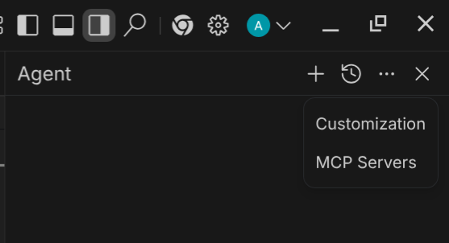
Next, click the Manage MCP servers button
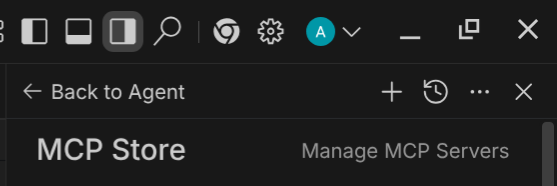
It will open the MCP servers configurations tab, then click the View Raw Config button
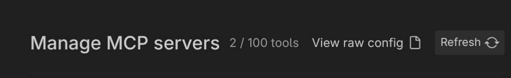
It will open the mcp_config.json file. Now copy paste this configuration to the file
{
"mcpServers": {
"adk-docs-mcp": {
"command": "uvx",
"args": [
"--from",
"mcpdoc",
"mcpdoc",
"--urls",
"AgentDevelopmentKit:https://adk.dev/llms.txt",
"--transport",
"stdio"
]
}
}
}This setup will enable the coding agent to search and read ADK documentation using an MCP server
Install Publicly Available Skills
We previously inspected skills that we created on our own ( the repo-research and mcp-toolbox-postgres skills). However there are many other skills that are useful to support our software development and can be easily installed to our coding agent.
Caveman Skills
One of the useful skills to reduce token usage is this caveman skill . This skill can cut the output token from the agent,make it a good combination when you utilize a full Spec-driven development like this tutorial
npx skills add JuliusBrussee/cavemanSimilar like before, let's select the caveman skill here for now
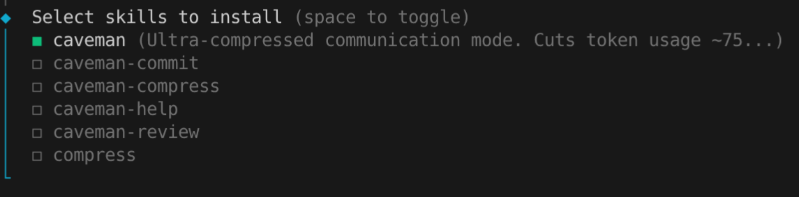
Then, just click Enter to other option to enable default installation and installing the skill in your current project
Now, we should already have 4 skills configured and ready to start our SDD journey
.agents/skills/
├── caveman
├── mcp-toolbox-postgres
└── repo-researchGenerate the project context
Ensure the rules directory exists:
mkdir -p .agents/rulesIn Antigravity's Agent Manager/Chat box (in editor mode press ctrl + L), start a new conversation. Type:
Research this repository and create a project context document, and communicate efficientlyAntigravity matches your request to the repo-research and caveman skill ( command to communicate efficiently ), and begins systematically analyzing the codebase. It reads configuration files, source code, and documentation, then populates the project context template with its findings.
Once complete, open .agents/rules/project-context.md in the editor. It contains concrete information about the project: technology stack (Python 3.12, ADK, MCP Toolbox, Cloud SQL), project structure, data model (menu_items table with pgvector), and external integrations.
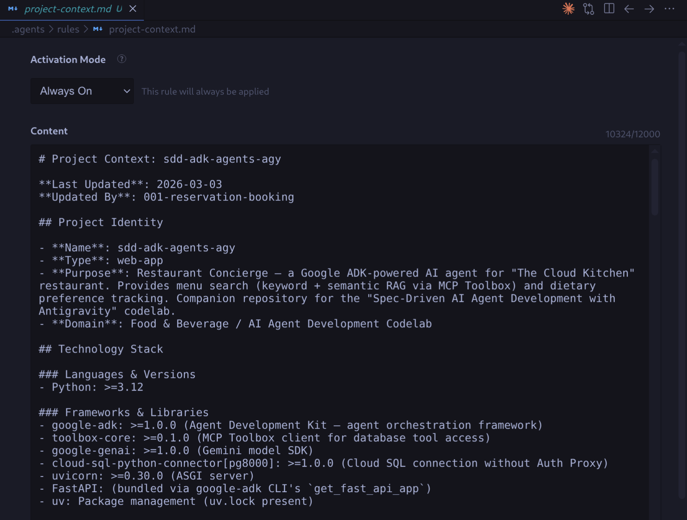
Set the project constitution
The SDD workflows reference a project constitution at .specify/memory/constitution.md during planning and analysis. The /speckit.plan workflow runs a "Constitution Check" against it, and /speckit.analyze flags violations as CRITICAL. If the constitution is left as a blank template with placeholder tokens, these checks have nothing to validate against — plans and analyses run without guardrails.
The constitution defines non-negotiable project principles. This is a small repo maintained by a single developer, so the constitution should reflect that scope — keep things simple, consistent, and avoid over-engineering.
In Antigravity's Agent Manager, start a new conversation. Run the constitution workflow:
/speckit.constitution This is a small restaurant concierge ADK agent maintained by one developer. Set 3 principles: (1) All database operations go through MCP Toolbox tool definitions in tools.yaml — no raw SQL in Python code, no ORM. (2) Session state uses ADK ToolContext — no custom state management, no external state stores. (3) Keep it simple — follow existing file and naming conventions exactly.Antigravity fills the constitution template with concrete principles, assigns a version (1.0.0), and runs a consistency check across the SDD templates.
Review the generated constitution at .specify/memory/constitution.md. Verify the three principles are present and clearly stated.
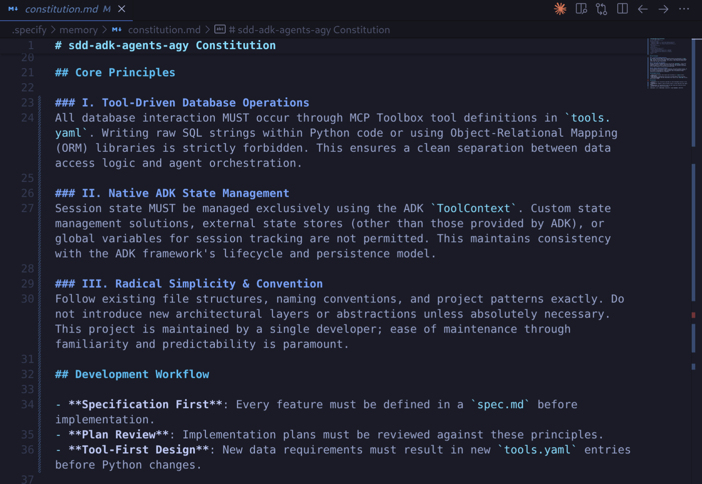
5. SDD Cycle — Add Reservation Feature
This step walks through a complete SDD cycle to add reservation booking to the restaurant concierge agent. You drive Antigravity through each phase — specify, clarify, plan, tasks, analyze, implement — observing how each artifact builds on the previous one. This is the core learning experience of the codelab.
Specify the feature
In Antigravity's Agent Manager, start a new conversation. Type the /speckit.specify workflow command with a feature description:
/speckit.specify Add reservation booking capability to the restaurant concierge agent. Guests should be able to make a table reservation by providing their name, party size, date, and time. They should also be able to check existing reservations. The agent should confirm reservation details before booking and handle special requests (e.g., "window seat", "birthday celebration").Antigravity creates a feature branch, generates a specification document, and runs quality validation. If Antigravity presents clarification questions, answer them based on the feature description above.
The specification focuses on WHAT and WHY — not HOW. It describes the user experience ("Guests can book a reservation by providing their name, party size, date, and time") without mentioning SQL tables, tools.yaml, or ADK APIs. Implementation details come in the planning phase.
Review the generated specification at specs/<branch-name>/spec.md. Verify it captures the functional requirements and success criteria.
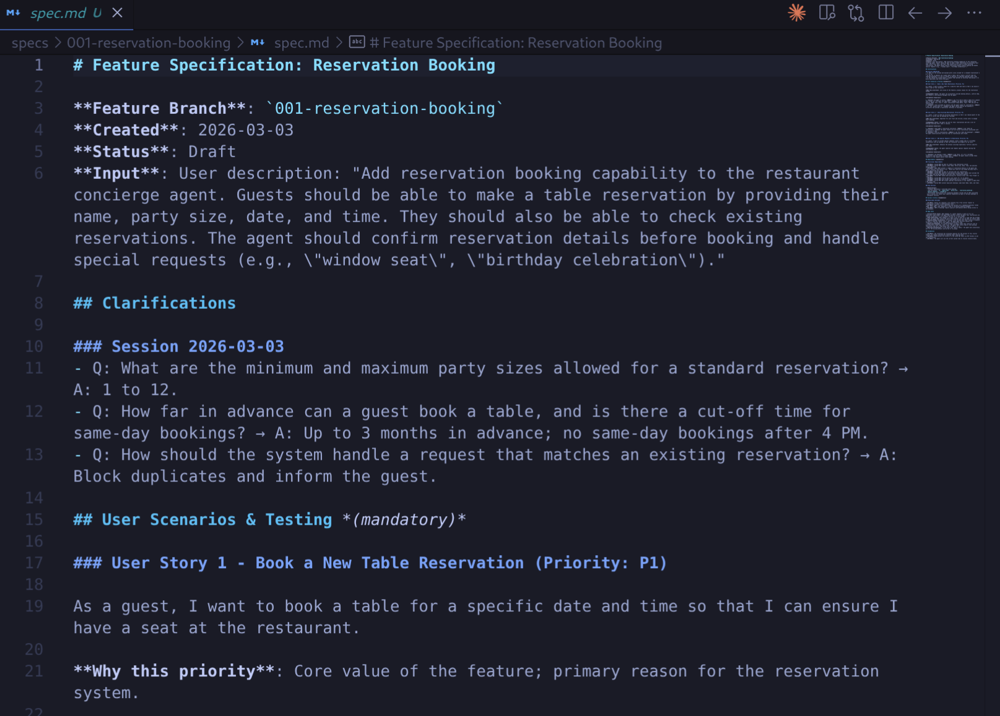
Clarify the specification (optional)
Run the clarify workflow to identify and resolve underspecified areas in the spec:
/speckit.clarifyAntigravity scans the spec for ambiguities, missing acceptance criteria, and underspecified requirements. It asks targeted clarification questions — each answerable with a short selection or phrase. Your answers are encoded directly back into the spec, making it more precise before planning begins.
Plan the implementation
Run the planning workflow:
/speckit.plan Update the restaurant concierge agent to multi agent architecture which separate responsibilities for handling menu and reservations. Utilize your access to ADK Docs tools and MCP toolbox skill to implement it properlyAntigravity generates a technical plan through two phases:
- Research phase — resolves unknowns about the existing codebase, generates
research.md - Design phase — creates
data-model.md(reservations entity definition) and updatesproject-context.md
Antigravity should use the ADK Docs MCP tools and MCP toolbox docs skill during planning. Review the key artifacts:
specs/<branch-name>/plan.md— the technical approach: which files to modify, what patterns to followspecs/<branch-name>/data-model.md— the reservations entity definition (columns, types, relationships)specs/<branch-name>/research.md— decisions made and rationale
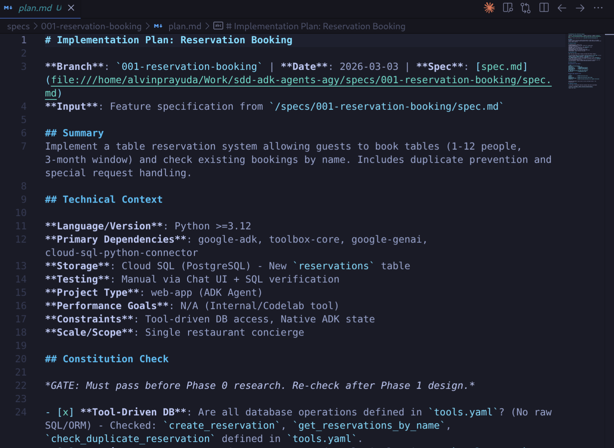
Generate tasks
Run the tasks workflow
/speckit.tasksAntigravity breaks the plan into an ordered task list in specs/<branch-name>/tasks.md. Tasks follow a strict checklist format with IDs, priority markers, and file paths, for example:
- [ ] [T001] [P] Create reservations table schema in scripts/seed_db.py
- [ ] [T002] [P] Add create_reservation tool to tools.yaml
- [ ] [T003] [P] Add list_reservations tool to tools.yaml
- [ ] [T004] [P] Update agent instruction in restaurant_concierge/agent.pyTasks are organized into phases: Setup → Foundational → User Stories → Polish. Scan the task list to understand what will be created and modified.
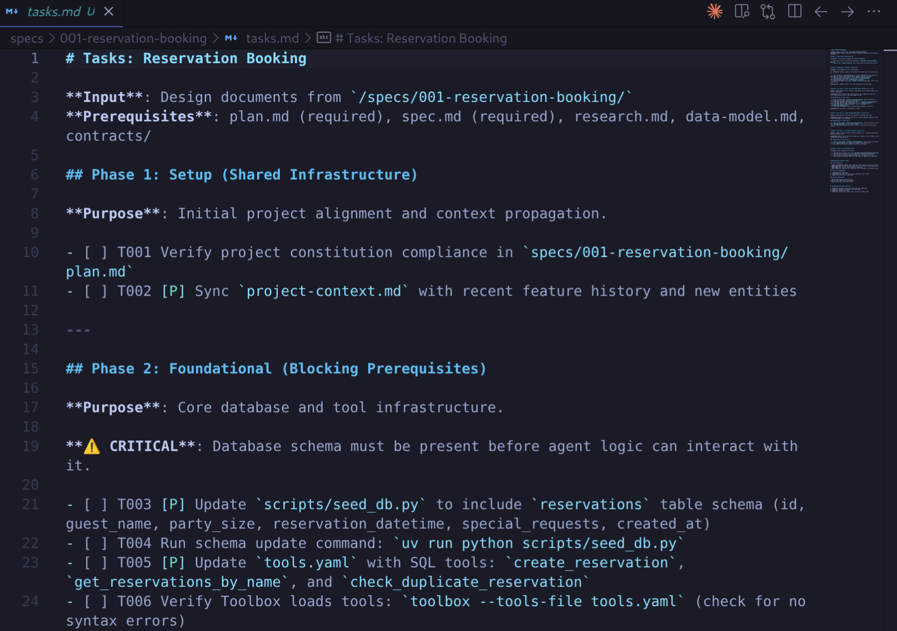
Analyze tasks (optional)
Run the analyze workflow to review the tasks for risks and gaps:
/speckit.analyzeAntigravity checks the task list against the spec and plan, looking for missing edge cases, tasks that may conflict, or gaps between the spec's requirements and the planned work. Address critical issues before implementing.
6. Implement
Run the implementation workflow:
/speckit.implementAntigravity presents a final implementation plan and task artifact. Review and approve it to proceed
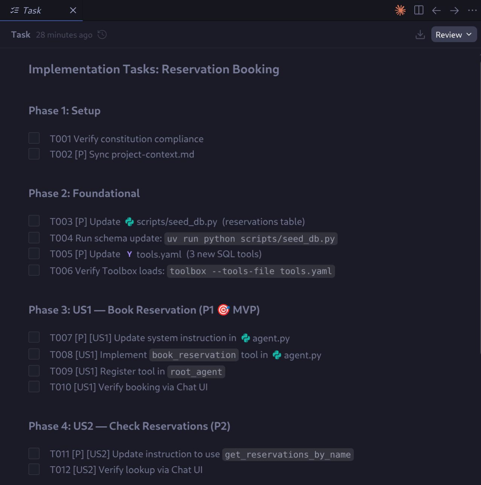
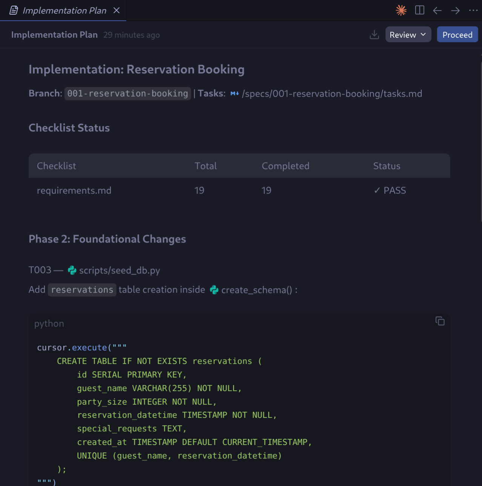
Antigravity executes the tasks, checking each one off as it completes. When it finished, it will present the complete Walkthrough
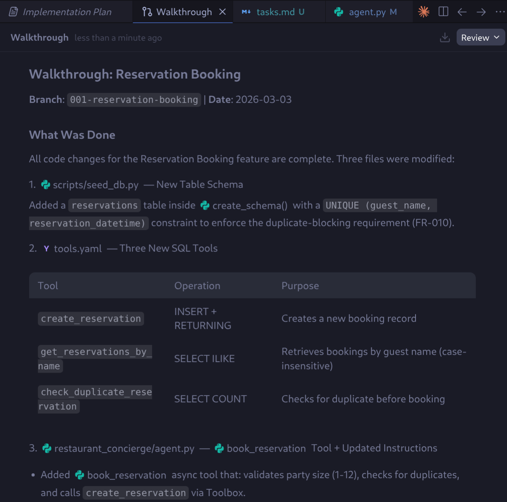
Test the code changes
After implementation completes, verify the key changes were made. The exact file names and content may vary, but these patterns should be present like in tools.yaml and agent.py:
# Verify reservation tools were added to tools.yaml
grep -i "reservation" tools.yamlYou will see some output like this
...
get_reservations_by_name:
Retrieve all reservations for a guest by their name. Uses case-insensitive
SELECT id, guest_name, party_size, reservation_datetime, special_requests, created_at
FROM reservations
ORDER BY reservation_datetime DESC
...And for agent.py
# Verify agent instruction was updated
grep -i "reservation" restaurant_concierge/agent.py
# Check what files changed
git diff --name-onlyMaybe you will find changes like this
...
- **Table Reservations**: Help guests book a table or check their existing reservations.
## Reservation Booking Rules
When a guest wants to make a reservation, collect ALL of the following before confirming:
**IMPORTANT**: Before calling `book_reservation`, you MUST:
- Only call `book_reservation` after the guest says "yes" or "confirm"
## Checking Reservations
When a guest asks to check their reservations:
- Use `get_reservations_by_name` to find their bookings
book_reservation,
...The changes should be affecting the seed database script. The updated script should create the reservations table if it does not already exist. You should see output confirming the new table was created (the existing menu_items data is preserved).
If everything goes well up to this point, we can test the feature on the ADK agent Dev UI. Let's do the database migration to incorporate new table and restart the Toolbox to pick up the new tool definitions in tools.yaml. Stop any existing Toolbox process, then start a fresh one:
lsof -ti:5000 | xargs kill -9 2>/dev/null; echo "Done"
./scripts/setup_database.sh > database_setup.log 2>&1 &You can check the output log in the database_setup.log whether Antigravity generates correct code and configuration or not. If you encounter error try interacting with the agent to fix it
If all goes well, then we can start the ADK dev UI:
uv run adk web .Open http://localhost:8000 in your browser and test with these prompts:
I'd like to book a table for 4 people on Friday at 7pm under the name TimmyDo I have any upcoming reservations?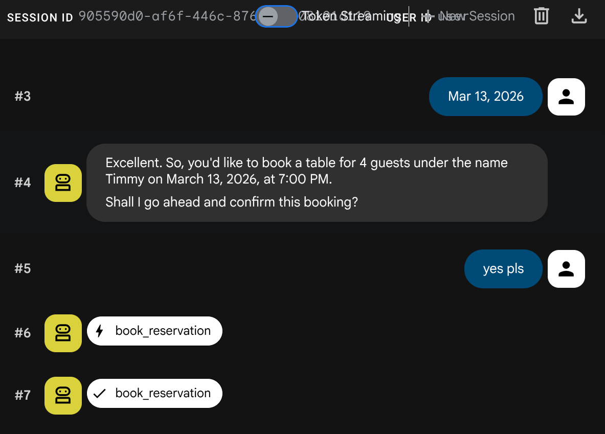
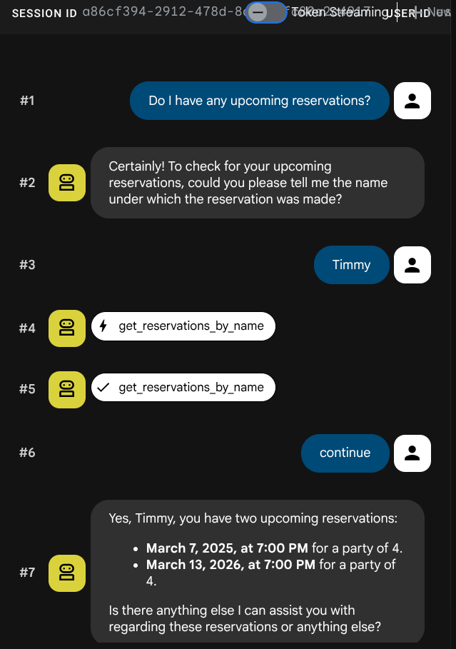
Now, stop the ADK dev UI with Ctrl+C twice.
7. Challenges (Optional)
You now know the full SDD workflow. Put it to the test:
- Run a second SDD cycle to build a web chat interface for the restaurant concierge — this time without step-by-step guidance.
- Deploy your agent to Cloud Run for production scenario
Hints
- The project has no frontend framework. Antigravity should propose vanilla HTML/CSS/JS — if it suggests React or similar, nudge it toward simplicity (your constitution's "keep it simple" principle should catch this).
- The ADK server exposes
/run<em>ssefor streaming and/apps/{app</em>name}/users/{user_id}/sessionsfor session management. Antigravity discovers these from the project context. - After implementation, start the server with
uv run uvicorn server:app --host 0.0.0.0 --port 8080(notadk web) so the static file mount works. - Test at
http://localhost:8080/static/index.html. - The reference codelabs already show how to deploy and persist ADK agent, give Antigravity references to this!
8. Congratulations!
You have extended a restaurant concierge ADK agent with reservation booking — entirely through Antigravity's SDD workflows, without writing application code by hand.
What you built
- A restaurant concierge ADK agent with menu search, semantic search, dietary preference tracking, and reservation booking
- An Antigravity skill for repo research that generates and maintains a project context document
- A project constitution that enforces non-negotiable principles during planning and analysis
- A complete SDD cycle demonstrating the specify → clarify → plan → tasks → analyze → implement workflow
What you learned
- How to use Spec-Driven Development workflows in Antigravity to systematically add features to an existing codebase
- How to create Antigravity skills and configure MCP that package domain knowledge for reuse across conversations
- How to bootstrap project context so Antigravity makes informed decisions about architecture, patterns, and technology choices
- How to set a project constitution that the SDD workflows validate against
- How to extend an ADK agent with new database-backed tools via MCP Toolbox
Clean up
Stop any running local processes (Toolbox):
lsof -ti:5000 | xargs kill -9 2>/dev/nullDelete the Cloud SQL instance to avoid ongoing charges:
gcloud sql instances delete restaurant-db --quietOptionally, delete the entire project:
gcloud projects delete $GOOGLE_CLOUD_PROJECT